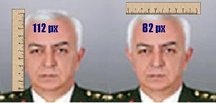

Brekisefal Degil
Org. Koşaner malum devir-teslim töreninde bizi pek derin felsefi görüşleri ile aydınlattı. Madem ulusalcı ideolojiyi bu kadar hatmetmiş, etnikçilikten, cemaatlerden bahsetmiş, kendisi acaba bir diğer 1930 model düşünce olan Türk Tarih Tezi (TTT) hakkında ne düşünüyor?TTT'ye göre Türk'lerin brekisefal (bir kafatası şekli) yapısında olması gerekir, yani kafatasının eninin boyuna olan oranı 0.85'ten daha yüksek olmalıdır. Piksel bazında bizim yaptığımız ölçümlere göre Koşaner, enine 82 px boyuna 112 px ölçülerde ve bu iki ölçümün oranı 0.73 çıkıyor.

Yani bu ölçümlere göre ve TTT'ye göre Sn. Koşaner Türk değil. Neyse: Bu saçmalıklar tabii ki bizim umrumuzda değil. Bizce, bir insanın işinde yükselmesi için tek önemli kıstas meritokrasi yani o kişinin kabiliyeti ve becerisi.